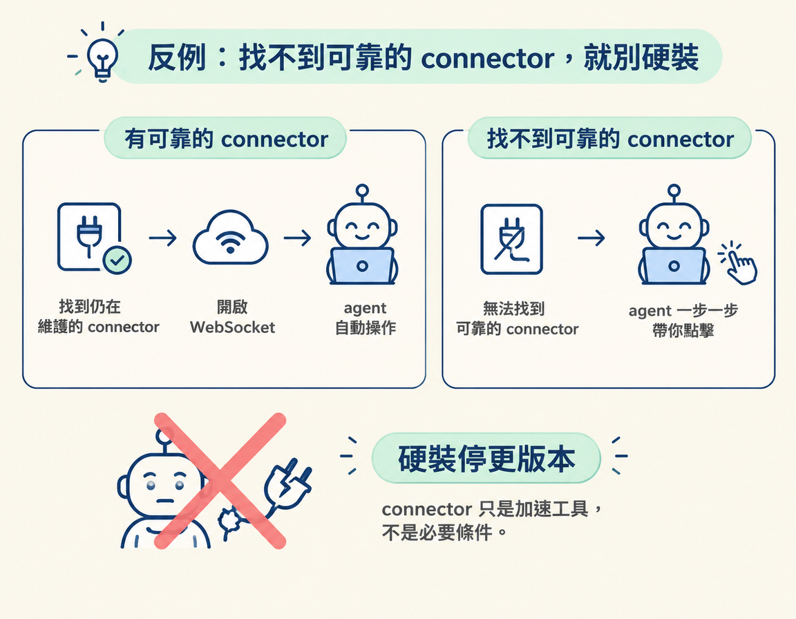

這一步位於 Camera and Setup 流程的第 3 步：先確認哪個 OBS connector 還能用，再開啟 WebSocket，讓 agent 能連上並操作 OBS。完成後，你就知道該怎麼做；如果找不到可靠的 connector，也知道可以改用 agent 一步一步帶你點擊。
上一節提到，OBS 的一個優點是 agent 可以驅動它。不過要做到這件事，得先有 connector，也就是把 agent 和 OBS 接起來的工具。
課程附的 OBS connector 不是官方維護的工具，講師也提醒它可能隨時間變化。現在能用，不代表幾個月後仍然能用。所以這一節不教你死記某個固定版本，而是帶你判斷：目前有沒有還在維護的 connector？找不到時，又該怎麼辦？
想知道怎麼讓 agent 操作 OBS，可以比較以下幾種做法，看看維護狀況、方不方便、代價各是什麼：
| 選項 | 誰在維護 | 優點 | 風險／代價 |
|---|---|---|---|
課程附的社群 connector（例如 OBS MCP，royshil/obs-mcp） | 社群，非官方 | 現成、直接可用 | 可能過期、可能不再相容 |
自己用 /search-connectors 找最新的 | 看找到哪一個 | 能跟上變化，找到目前還有維護的 | 要多花一個指令、多一次確認 |
| 等未來可能出現的官方 connector | OBS 官方（未來） | 若出現，最穩定 | 現在還不能依賴它 |
| 完全不用 connector，靠 agent 帶你逐一點擊 | 你自己 | 一定做得到，不賭相容性 | 不是自動，得多點幾下 |
課程建議不要一直依賴附上的連結，而是每次要用時先跑 /search-connectors。這個社群 skill 會幫你查目前有哪些 OBS connector。把「先找目前可用的工具」變成習慣，就比較不會在工具停止維護後才發現它已經失效。
不必先讀懂 connector 的原始碼。你可以用下面幾個問題判斷它適不適合用：
找到仍在維護的 connector 後，還要在 OBS 裡開啟 WebSocket 伺服器。WebSocket 是 OBS 和 connector 交換訊息的通道，可以把它想成對講機頻道，agent 的指令會經由 connector 傳到 OBS。這個通道沒開，agent 即使有 connector，也連不進 OBS。
課程提供的 prompt 把兩種情況都寫了進去：找到還有人維護的 connector，就開啟 WebSocket；找不到，就改由 agent 一步一步帶你操作。原文如下：
3. Check for a connector: run /search-connectors for OBS (or search for an OBS MCP server). If there's one that's still looked after, tell me what it can do and help me turn on the WebSocket server in OBS (Tools, WebSocket Server Settings), so you can control OBS yourself. If not, walk me through each click instead.這段 prompt 的判斷很直接：如果有還在維護的 connector，就開啟 WebSocket；如果沒有，就請 agent 一步一步帶你點擊。WebSocket 設定的位置是 OBS 的 Tools → WebSocket Server Settings。要開始搜尋的話，用這個指令：
/search-connectors如果找不到仍在維護的 connector，就不要勉強安裝一個看起來已經停更的版本。它可能無法使用，甚至讓 OBS 出問題，最後反而要花更多時間處理問題。
這時改用另一條路就好：讓 agent 一步一步帶你操作。connector 的作用是讓操作更自動，不是使用 OBS 的必要條件。

先用
/search-connectors找目前可用的 OBS connector，再確認它是否仍在維護。找到可靠的 connector，就到 OBS 的 Tools → WebSocket Server Settings 開啟 WebSocket；找不到，就請 agent 一步一步帶你點擊。記住這個判斷：先確認 connector 還有人維護，再嘗試連線；沒有可靠選項，就改用手動操作。
做到這裡，你已經確認了可用的 connector 和 WebSocket 連線方式，或準備好改用一步一步點擊的方式。下一節會提供一段完整 prompt，讓 agent 協助你設定 OBS，包括安裝、收音和場景。